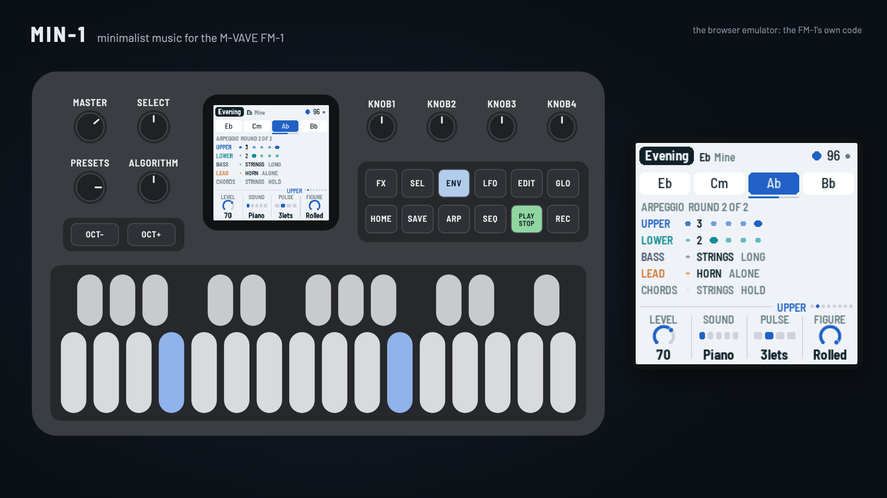
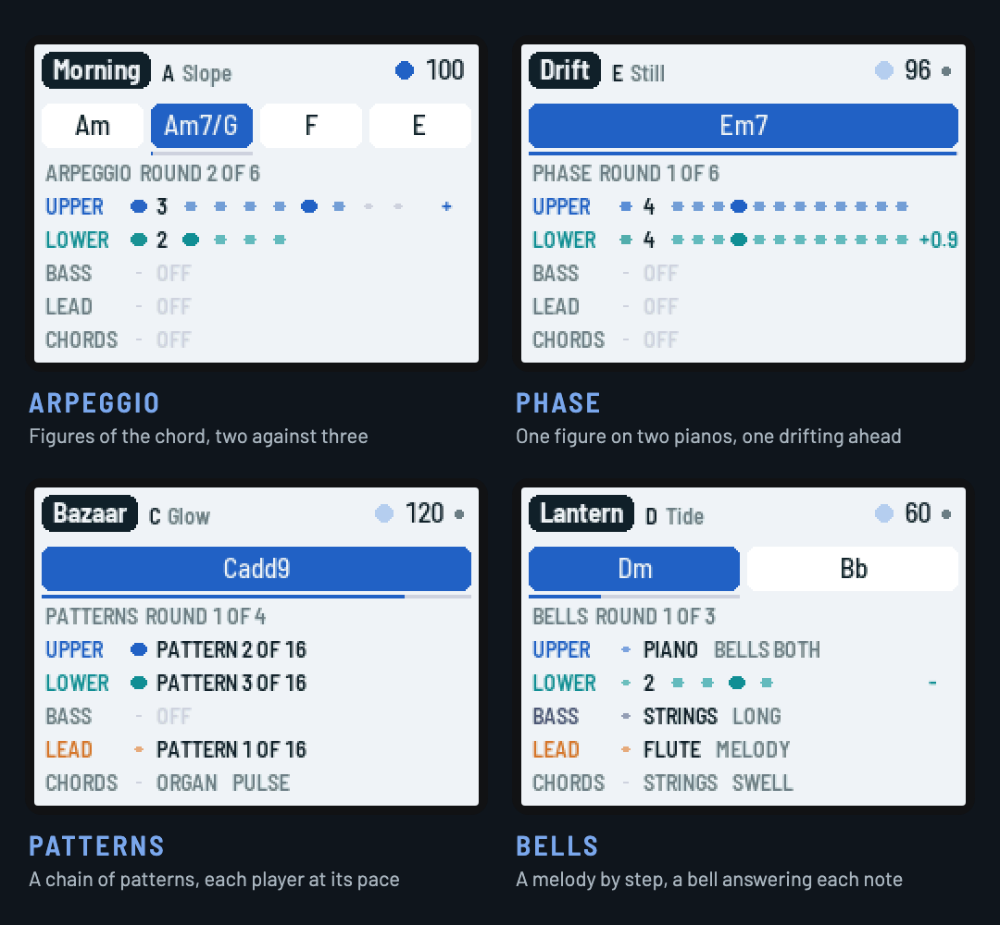

MIN-1
Minimalist music for the M-VAVE FM-1, by Reytian. Inspired by FM1-AMB and Philip Glass.
MIN-1 turns the FM-1 into a small minimalist ensemble, in the manner of the music of the 1960s to 80s that was made from very little: repeating figures, slow cycles of chords, processes you can hear. It plays itself from the moment it's switched on; then you take over as much as you like.

Four models, twenty pieces

- Arpeggio. Figures of the chord's tones, two against three; the additive process grows and shrinks them a note at a time.
- Phase. Two parts play one figure; the lower slowly drifts ahead, locks in a step ahead, drifts on, round to unison.
- Patterns. A chain of short patterns, each a little changed from the last; three players move along it at their own pace over a high pulse.
- Bells. A melody walks the scale by step in phrases that grow from one note; a bell answers each note with the chord's nearest tone.
No music theory needed: in EASY keys every white key is a chord that fits. EDIT rolls ideas and keeps the ones you like, SEL + REC learns your own chord cycle, and REC records a song that PLAY plays back exactly.
中文简介
MIN-1 是 M-VAVE FM-1 的极简主义音乐固件，受 FM1-AMB 与 Philip Glass 启发。开机就自己演奏：重复的音型、缓慢的和弦循环、听得见的过程；然后交给你：按住白键就是和弦（不需要乐理），EDIT 随机出点子，教它你自己的和弦循环，亲手让声部进出，录下一首歌并原样回放。四种模型（琶音、相位、模式、钟声），二十首曲子。在浏览器里试玩，或用 Chrome / Edge 安装。
Installing firmware is at your own risk. To go back to the official firmware, use the installer's "Back to the stock firmware", or M-VAVE's updater, M-UPGRADE, from m-vave.com/download. M-VAVE and FM-1 are trademarks of their owners. MIN-1 is not affiliated with M-VAVE, Hügelton Instruments, Charles Vestal, Philip Glass, or any composer.